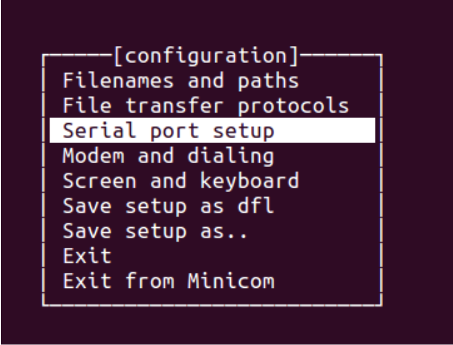
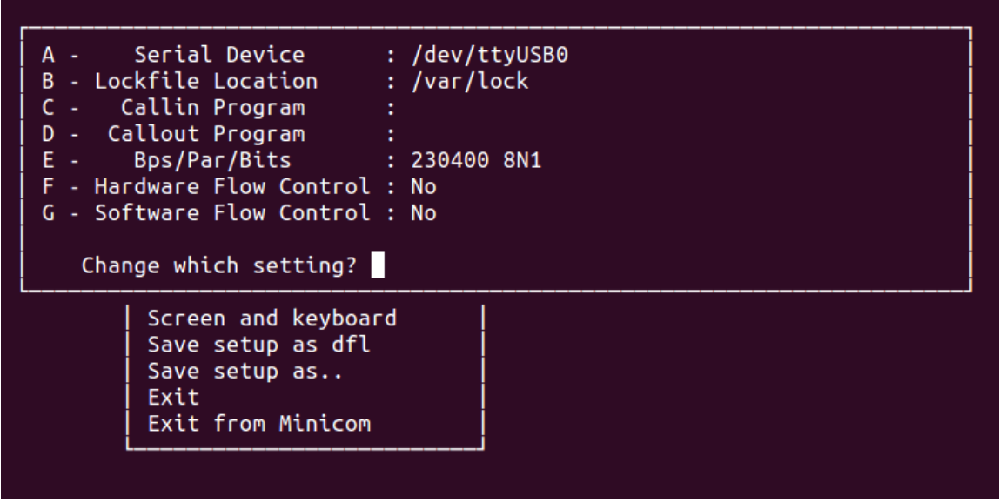

シリアル通信ソフトの設定方法
ホスト PC が Linux (Ubuntu12.10) の場合
minicom を使って、シリアル通信を行います。必要に応じて、ホスト PC に minicom をインストー ルしてください。
sudo apt-get install minicom
シリアル通信モジュール (FT232RL) とホスト PC を接続すると、/dev/ttyUSB{+ 数字 }, /dev/ttyACM{+ 数字 } などのデバイスファイルが現れますので、確認して下さい。その状態で、 minicom を起動します。
LANG=C sudo minicom -s
Serial port setup を選択します。

下図の通りに設定し、Exit を選択するとセットアップは完了です。この例では、シリアル通信モジュールが/dev/ttyUSB0として認識されています。
